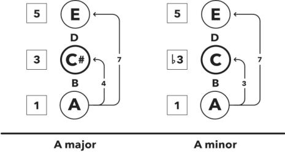

大三和弦与小三和弦的区别
Hack
Triads are the simplest chords, as they consist of only three notes.
三和弦是最简单的和弦，因为它们只包含三个音符。
Chords are built by playing a note in the scale, then skipping over the adjacent note to the right and playing the note above it, and then repeating this play-skip pattern until you have the desired chord.
和弦是通过在音阶中演奏一个音符，然后跳过右边的相邻音符并演奏其上方的音符，再重复这个演奏-跳过的模式，直到你得到所需的和弦。
The first triad in A major is A C♯ E (known as the A major triad), which sounds happy.
A 大调的第一个三和弦是 A C♯ E（称为 A 大三和弦），听起来很快乐。
The first triad in A minor is A C E (known as the A minor triad), which sounds sad.
A 小调的第一个三和弦是 A C E（称为 A 小三和弦），听起来很悲伤。

Figure 9.1 Comparison of A major triad to A minor triad
图 9.1 A 大调三和弦与 A 小调三和弦的比较
Only one note is different from the A major triad to the A minor triad, the 3rd, yet the emotions are opposite.
从 A 大调三和弦到 A 小调三和弦只有一个音符不同——即第三级音符——但情感却截然相反。
This reveals that the third note, or 3rd, is the magic ingredient in music that gives chords and scales their happy or sad sound.
这表明第三音符，或者三音，是音乐中赋予和弦和音阶快乐或悲伤情感的关键成分。
The 3rd in a minor triad is closer to the root (three semitones) and therefore less harmonious, causing a dissonant or clashing sound and emotion.
小三和弦中的三音距离根音较近（三个半音），因此不太和谐，产生不协和或冲突的声音和情感。
The 3rd in a major triad is further away from the root (four semitones) and therefore vibrates more harmoniously, causing a consonant or pleasing sound and emotion.
大三和弦中的三音离根音更远（四个半音），因此振动更加和谐，产生协和或悦耳的声音和情感。
The note that completes these triads is called the perfect 5th, due to its perfect mathematical ratio to the root.
完成这些三和弦的音符称为纯五度，因为它与根音的数学比例完美。
By the way, the same is true about the octave, which is why it’s also referred to as the perfect 8th.
顺便说一句，八度也符合同样的比率，这也是它被称为纯八度的原因。
INTERVALS 间隔
Minor 3rd (spelling = ♭3) three semitones
小三度（记法 = ♭3）三个半音
Major 3rd (spelling = 3) four semitones
大三度（记法 = 3）四个半音
Perfect 5th (spelling = 5) seven semitones
纯五度（记法 = 5）七个半音
Octave / perfect 8th (spelling = 8) twelve semitones
八度 / 纯八度（记法 = 8）十二个半音
Chapter
Okay, okay, I can hear your inner why-kid loud and clear: “I understand the difference between major and minor scales now, but why does the one make me feel happy and the other sad?”
好吧，好吧，我能听到你内心的疑问：“我现在理解了大调和小调的区别，但为什么一个让我感到快乐，另一个却让我感到悲伤？”
Amazing question, and one of the most fascinating musical topics ever.
真是个了不起的问题，也是最令人着迷的音乐话题之一。
Until recently we battled between the classic nature/nurture divide.
直到最近，我们还在经典的先天/后天争论中挣扎。
Cultural conditioning has certainly deepened this phenomenon.
文化确实加深了这种现象。
For example, every year when we celebrate being one year wiser, we sing “Happy Birthday” – which is in a major scale – thus reinforcing our association of major scales with happiness.
例如，每当我们庆祝自己又长大一岁时，我们会唱“生日快乐”这首歌——它是大调音阶——从而强化了我们将大调音阶与快乐联想在一起的印象。
However, in 2009 the isolated Mafa tribe of Cameroon and Nigeria, who’d never been exposed to any music outside of their rural community, were involved in a historic study to find out if they also felt major as happy and minor as sad. They did!
然而，在 2009 年，生活在喀麦隆和尼日利亚农村社区中的孤立玛法部落参与了一项历史性研究，结果发现他们也觉得大调是快乐的，小调是悲伤的。事实确实如此！
The Mafa people ended this debate by evidencing a non-cultural human response to music.
玛法人通过实验证明了人类对音乐的非文化反应，从而结束了这场争论。
This is due to the sound waves vibrating more harmoniously in majors than in minors, proving that we truly are all hardwired to feel music as a universal language – genres are merely dialects.
这是因为音波在大调中比在小调中更和谐地振动，证明我们天生具备将音乐视为通用语言的能力——音乐风格只是方言。
Let’s explore this starting with triads, the simplest chords we have.
让我们从三和弦开始探索，这是我们最简单的和弦。
These consist of only three notes.
它们只包含三个音符。
We build chords by playing a note from the scale, then leapfrogging a couple of times.
我们通过在音阶中演奏一个音符，然后跳过几个音符来构建和弦。
In other words, you play a note in the scale, then skip over the adjacent note to the right and play the note above it, repeating this play-skip pattern until you have the desired chord.
换句话说，你在音阶中演奏一个音符，然后跳过右边相邻的音符并演奏它上面的音符，重复这个演奏-跳过模式，直到你得到所需的和弦。
We can actually do this through the entire scale until we have all of its notes in our chord, resulting in jazz – oops, sorry!
我们实际上可以这样做，直到整个音阶的所有音符都在我们的和弦中，结果是爵士乐——抱歉！
I mean, resulting in a seven-note chord – but the most common type of chord in popular music is the three-note triad.
我指的是，结果是一个七音和弦——但在流行音乐中最常见的和弦类型是三音三和弦。
Oh come now, it was just a little joke. I’m a massive jazz fan, so don’t send me hate mail, mmmkay? 哦，别在意，这只是一个小玩笑。我是个超级爵士乐迷，所以别发邮件骂我，好吗？
When you assemble a triad from the root in A major, you end up with the notes A C♯ E, which is known, unsurprisingly, as the A major triad.
当你从 A 大调的根音构建三和弦时，你会得到音符 A C♯ E，这毫不意外地被称为 A 大三和弦。
When we do the same from the root in A minor, we get the notes A C E, known as the A minor triad.
当我们从 A 小调的根音做同样的事情时，我们会得到音符 A C E，被称为 A 小三和弦。
If you play these notes on a piano or bagpipes or whatever instrument you have handy, you’ll hear and feel very clearly that the A major triad is exuding happiness into the atmosphere, while the A minor triad gently weeps on our shoulders.
如果你在钢琴、风笛或任何方便的乐器上演奏这些音符，你会非常清楚地听到并感受到，A 大调三和弦散发出快乐的气息，而 A 小三和弦则轻轻在我们肩头低语。
What the hell kind of sorcery is at work here?
这到底是什么魔法？
Only one note is different from the A major triad to the A minor triad, yet the emotions are opposite.
从 A 大调三和弦到 A 小调三和弦仅有一个音符不同，但情感却是完全相反的。
This discovery you have just made is profound: the third note, or 3rd, is the magic ingredient in music that gives chords and scales their happy or sad sound.
你刚才的发现非常深刻：第三音，或称 3rd，是在音乐中赋予和弦和音阶快乐或悲伤声音的关键成分。
We could sit around all day drinking tea and chatting about the importance of the 3rd, and that still wouldn’t do justice to its utmost gravity.
我们可以整天坐着喝茶，讨论 3rd 的重要性，但依然无法充分表达它的极端重要性。
It is impossible to over-emphasise the powers of the happy 3 and the sad ♭3.
快乐的 3 和悲伤的 ♭3 的力量不言自明。
The interval of three semitones is known as the minor 3rd (spelling = ♭3), as it’s the 3rd note in the minor scale, and the interval of four semitones is the major 3rd (spelling = 3), because it’s the 3rd rung of the major scale ladder.
三个半音的音程称为小三度（记法 = ♭3），因为它是小调音阶中的第三音，而四个半音的音程称为大三度（记法 = 3），因为它是大调音阶中的第三级。
Finally, the note that completes the triad is known as the perfect 5th (spelling = 5), due to the perfect mathematical ratio (3:2) of its relationship to the root, which is seven semitones away.
最后，完成三和弦的音符称为纯五度（记法 = 5），这是因为它与根音的关系具有完美的数学比例（3:2），相差七个半音。
This means that for every three sound wave vibrations of the perfect 5th, the root vibrates twice.
这意味着每当纯五度振动三次时，根音振动两次。
By the way, the same is true about the octave, also known as the perfect 8th (spelling = 8), as its notes are twelve semitones apart and result in another perfect ratio (2:1).
顺便说一句，八度也称为纯八度（记法 = 8），它的音符相差十二个半音，形成另一个完美比例（2:1）。
Finally, why do majors sound happy and minors sad?
最后，为什么大调听起来高兴，小调听起来悲伤？
The root (A in the above example) is our foundation on which the chord is built, so we hear it as the most important note.
根音（如上面的例子中的 A）是我们构建和弦的基础，所以我们认为它是最重要的音符。
Minor chords, with the ♭3 (C above) being only three semitones above the root, stir dissonance within us from the clashing sound of closer note vibrations.
小调和弦中的 ♭3（如上面的 C）仅比根音高三个半音，这种更贴近的音符振动产生的不和谐音调引起我们内心的不和谐。
Major chords, with the 3 (C♯ above) that’s four semitones above the root, resonate with our inner consonance to create a pleasing sound, thanks to their more spacious note vibrations.
大调和弦中的 3（如上面的 C♯）比根音高四个半音，由于音符振动更宽广，它们与我们内心的和谐共鸣，创造出悦耳的声音。